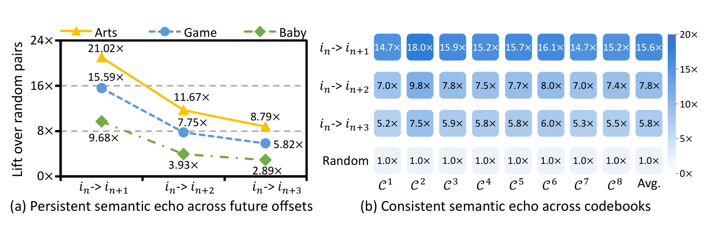
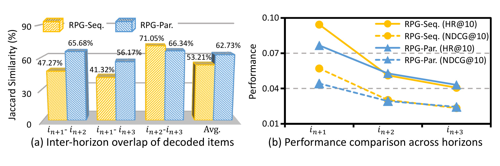
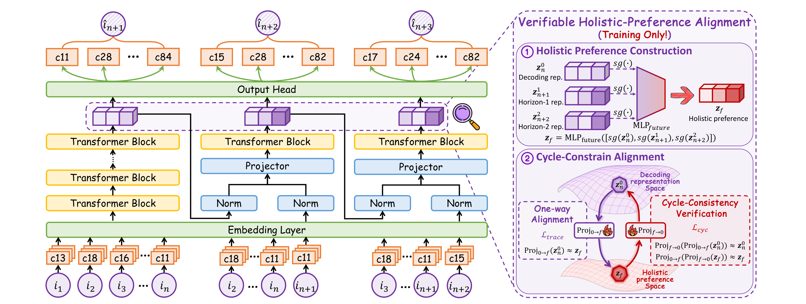
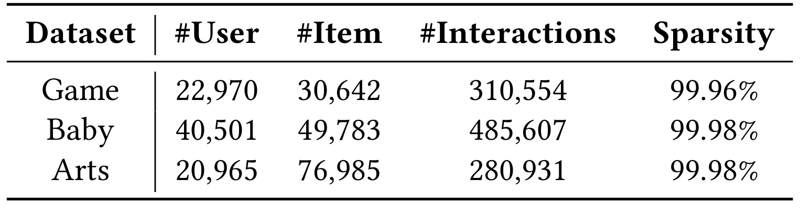
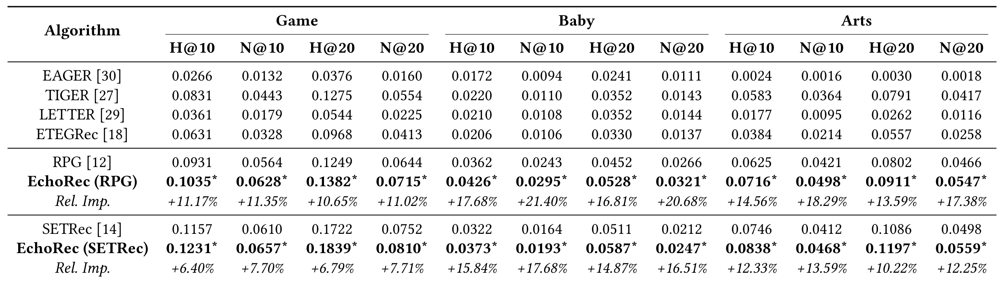
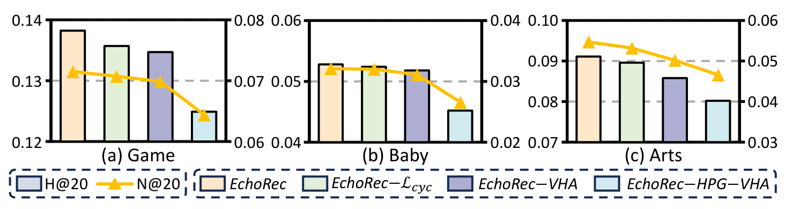
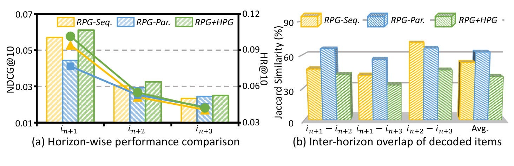
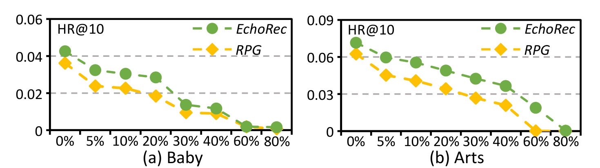
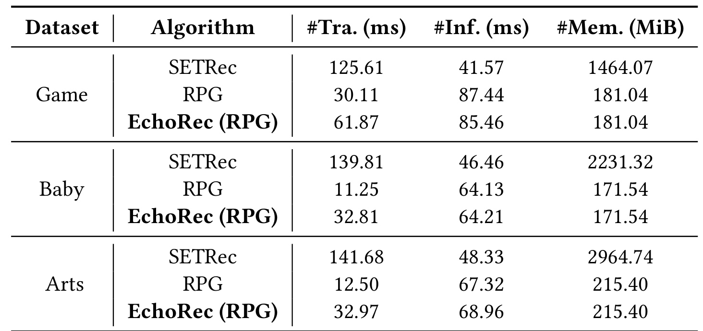
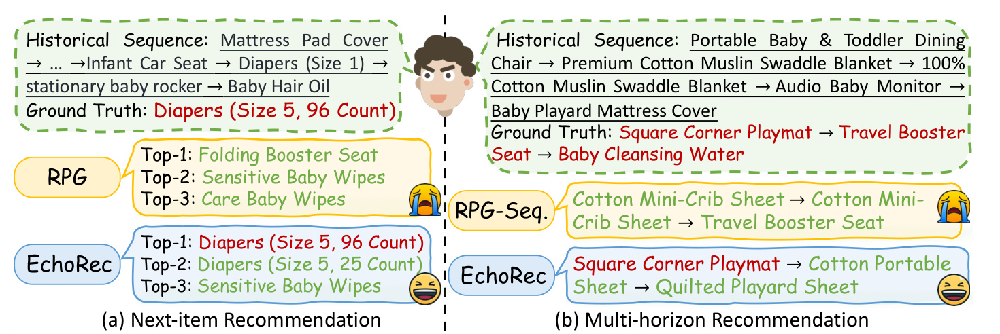

EchoRec：基于循环一致偏好对齐的多物品预测增强生成式推荐
这篇论文研究怎样把多物品预测从“多解码几个未来物品”的效率技巧，转化为能够改善当前推荐表示的密集监督。作者 Haokai Ma、Aoqi Hu、Yueao Xing、Ruobing Xie、Yonghui Yang、Teng Tu、Lei Meng 与 Tat-Seng Chua 来自新加坡国立大学、北京邮电大学、腾讯和山东大学；一作主机构为新加坡国立大学。论文于 2026 年 8 月 14 日提交，当前处于评审中，唯一论文入口为 arXiv:2608.14011。论文写明代码与数据将在录用后开放，本轮未核验到独立公开仓库。
未来行为确实保留了当前兴趣的语义回声，但这种回声会随预测跨度增加而衰减，因此既不能把更远行为当作随机噪声丢弃，也不能从同一个上下文并行地产生彼此同质的未来预测。更关键的是，即使加入未来监督，单向投影器也可能独自吸收两个表示空间的差异，使解码表示表面上完成对齐、实际上没有内化整体偏好。
1. 背景和问题
1.1 未来行为是信息还是噪声
生成式推荐先把每个物品表示为一组离散语义 ID（semantic ID，SID），再让生成器逐 token 或按码本输出目标物品。它与传统全库打分的差别在于：用户偏好建模和索引检索都落在同一 token 空间里，语义接近的物品可以共享部分 SID。已有工作主要沿两条路线改进这一范式：一条增强 tokenizer，使 SID 同时承载内容语义和协同信息；另一条增强生成器或对齐目标，使行为序列表示更适合恢复目标 SID。然而，它们大都只训练“下一个物品”这一单点目标，用户在训练序列中随后发生的行为并没有直接参与当前表示的塑造。
多 token 预测（MTP）给出了一个自然入口：训练时让共享主干同时或顺序预测多个未来目标，理论上能提供更密集的学习信号。在语言模型里，相邻 token 受语法和语义强约束；在推荐里，连续行为却可能跨越不同意图。用户刚看过婴儿车，下一步可能继续比较安全座椅，也可能转向纸尿裤；越远的行为越可能受新的会话目的影响。因此，论文首先不假定未来行为必然有用，而是测量当前物品与第一个、第二个、第三个未来物品之间的 SID 重叠，并除以随机物品对的重叠，得到“相对随机的提升倍数”。倍数高于 1 才说明未来物品仍与当前兴趣共享结构。

Figure 2 给出了第一个关键事实。左图中，Game、Arts、Baby 在第一个未来偏移上的重叠提升最高可到 21.02 倍；随着 horizon 从 1 增至 3，提升持续下降，但第三个未来物品仍有 2.89 至 8.79 倍，而不是退化到随机基线。右图把 Game 的八个 codebook 拆开后，三个 horizon 的提升在各码本上都保持相近层级，排除了“只有某个主导码本制造相关性”的简单解释。这意味着未来行为同时具有两种性质：它确实提供当前目标之外的信息，但信息强度和内容随意图转移而变化。于是监督应保留顺序关系，越远目标不能与近期目标等权、同源地平行处理。需要注意，这里测量的是 SID 重叠而非因果贡献；它证明未来行为有资格成为候选监督，却还不能证明把它加入训练一定提高 next-item 指标。
1.2 并行多物品预测的同质化陷阱
第二个问题来自 MTP 的结构选择。若三个分支都读取相同历史表示、分别预测三个未来物品，优化器很容易把它们训练成三个近似的 next-item 头：它们都偏向当前最显著的兴趣，却没有接收“上一 horizon 发生了什么”这一条件。论文用 RPG-Par. 表示这种并行设计，用 RPG-Seq. 表示朴素滚动：后者没有专门的未来监督，只是把前一个预测继续喂给下一步。作者比较三组 horizon 之间 top-10 推荐集合的 Jaccard 相似度，并分别查看每个 horizon 的 HR/NDCG。理想结构应在不损伤第一个目标的前提下，让不同 horizon 形成相互关联但不重复的候选。

Figure 3 的左图显示，RPG-Par. 的平均跨 horizon Jaccard 相似度为 62.73%，高于 RPG-Seq. 的 53.21%；涉及最近目标的两组差距尤其明显，$i_{n+1}$ 与 $i_{n+2}$ 为 65.68% 对 47.27%，$i_{n+1}$ 与 $i_{n+3}$ 为 56.17% 对 41.32%。右图进一步表明，高重叠并没有换来更好的近期推荐：并行版本在 $i_{n+1}$ 上反而落后，远期 horizon 也只大致追平没有专门监督的滚动版本。这组证据把“同质化”从视觉印象变成了两个可核验条件——候选集合更相似、近期性能却更差。它支持顺序依赖建模，但仍不是 EchoRec 本身的消融；真正检验 HPG 的证据还要看 Figure 6。
由此，论文面对的不是单一的“多预测几个目标”问题，而是三个连续环节：首先确认远期行为仍含当前偏好信息；其次让不同 horizon 按行为顺序传递条件，避免共享上下文把它们压成同一预测；最后保证这些辅助分支学到的整体偏好真正进入服务时使用的解码表示。前两个环节属于结构级监督，第三个环节属于表示级内化。EchoRec 的 HPG 负责前者，VHA 负责后者；二者在训练时协作，而在线推理只保留原始推荐分支。
2. 方法
2.1 从语义 ID 基座到 Horizon-aware Preference Generation
EchoRec 以 RPG 为主要基座，也在 SETRec 上验证可插拔性。每个物品 $i_t$ 经优化乘积量化得到由 $k$ 个 codebook token 组成的 SID，记为 $\phi(i_t)=\{c^{(t,1)},\ldots,c^{(t,k)}\}$。为了不让长 SID 把行为序列的上下文长度膨胀 $k$ 倍，基座先聚合一个物品的所有 token embedding 得到 $v_{i_t}$，再用 Transformer 编码物品级序列。共享输出头 $g(\cdot)$ 按 codebook 切分，某个码本的 token 分布为：
符号解释：$s$ 是历史序列最后位置的表示，$[g(s)]_j$ 是输出头对应第 $j$ 个码本的切片，$E_j$ 是该码本的 embedding 矩阵，$\tau$ 是温度。推理时并不遍历全部物品，而是在合法 SID 的相似图上做受约束 beam 扩展，用各码本 log probability 之和给候选评分。这一点很重要，因为 EchoRec 的工程主张不是换掉原解码器，而是让训练得到的 $s$ 含有更完整的偏好。
HPG 把原始分支记为 MTP-0。物品级序列 $H^0=[v_1,\ldots,v_n]$ 经过多层主干得到下面的状态序列。这个定义把“训练期新增分支”与“线上保留主分支”分开：后续所有辅助目标都可以借用中间状态，但最终推荐仍从主干末端状态出发。
符号解释：$Z^0$ 是主分支所有位置的隐藏状态，$z_n^0$ 是直接生成 $i_{n+1}$ 的解码表示，也是推理阶段唯一保留的核心表示。EchoRec 不修改 MTP-0 的输出头、合法 SID 图和线上候选解码；新增结构只在训练期把更远行为转化为对 $z_n^0$ 的监督。

Figure 4 应从左到右阅读。左侧 MTP-0 接收原历史并预测 $\hat{i}_{n+1}$；中间 MTP-1 不只读取 MTP-0 的表示，还读取右移一位、包含真实 $i_{n+1}$ 的物品序列，预测 $\hat{i}_{n+2}$；第三条 MTP-2 再以 MTP-1 表示和进一步右移的序列为条件，预测 $\hat{i}_{n+3}$。三个分支复用 embedding、输出头和合法解码图，辅助分支只增加一个投影层和一层 Transformer。右侧 VHA 把三条分支末端表示聚合成整体偏好，并用两个方向的 projector 构成闭环。紫色虚线框明确标注 VHA 仅训练时存在，所以图中的复杂度不能直接等同线上服务复杂度。整张图的核心不是“多头并行”，而是前向 horizon 依赖与反向表示验证形成的回声结构。
MTP-1 的输入把前一分支表示和右移后的物品 embedding 分别归一化后拼接。前者携带模型对上一 horizon 的预测轨迹，后者补入相邻真实行为，使新分支学习“在前一兴趣已经发生之后，下一步如何变化”，而不是再次从原历史猜同一个近期目标：
符号解释：$\operatorname{Proj}_1$ 把拼接结果映射回隐藏维度，$z_{1:n}^0$ 提供此前主分支的预测状态，$v_{2:n+1}$ 提供右移后的真实相邻行为。随后一层 $\operatorname{TRM}^1$ 产生 $Z^1=[z_2^1,\ldots,z_{n+1}^1]$，最后状态用于预测 $i_{n+2}$；MTP-2 以同样方式条件于 $Z^1$ 和 $[i_3,\ldots,i_{n+2}]$。因此 horizon 的关系是链式条件，而非从同一 $z_n^0$ 独立分叉。训练时的 teacher-forced 右移行为让每一级收到明确监督；若需要多物品生成，分支也能各自产生未来物品。普通 next-item 服务则丢弃 MTP-1/2，只执行 MTP-0。
2.2 Verifiable Holistic-Preference Alignment
只有 HPG 仍不够：未来监督通过辅助 loss 和共享参数间接影响主分支，不能保证 $z_n^0$ 明确包含三个 horizon 的综合信息。VHA 因而把三条分支的末端状态显式压到同一个目标中，并保留当前状态作为抗漂移锚点；这个整体偏好不是线上新输入，而是训练期用于检查未来信号是否进入主表示的教师目标：
符号解释：$z^f$ 是整体偏好表示，$\operatorname{MLP}_{\mathrm{future}}$ 是两层投影，$\operatorname{sg}$ 表示停止梯度。当前表示 $z_n^0$ 也被放进聚合器，作用是锚定最近意图，防止两个较远 horizon 在发生兴趣漂移时完全主导目标；停止梯度则避免对齐 loss 反向扭曲三条已有监督分支。此时，直接把主分支表示投影到整体偏好空间，可得到 trace loss：
符号解释：$\operatorname{Proj}_{0\to f}$ 把服务侧解码表示送到整体偏好空间，余弦距离鼓励二者方向一致。Eq. (5) 中的 $z_n^0$ 被停止梯度，但 Eq. (6) 左侧的 $z_n^0$ 仍可微，因此这条 loss 会把未来偏好写回主表示。问题是，$\operatorname{Proj}_{0\to f}$ 本身也有容量：它可能学会从一个并不知晓未来的 $z_n^0$ 映射到 $z^f$，在投影空间取得很小 loss。单向 loss 只能观察投影后的接近，无法区分“主表示真的内化偏好”和“projector 记住了跨空间捷径”。
为限制这个捷径，VHA 再引入反向 $\operatorname{Proj}_{f\to0}$，要求两个方向都能往返重建原表示。直观上，若前向映射为了降低单向 loss 而把不同输入压到同一低秩方向，反向映射便无法恢复各自起点；把这种失败直接纳入优化，才能约束 projector 的信息保留能力：
符号解释：第一项从解码空间走到整体偏好空间再返回，第二项反向往返；两端表示都停止梯度，所以 $L_{\mathrm{cyc}}$ 只塑造 projector pair，不直接移动 $z_n^0$ 或 $z^f$。若前向 projector 丢掉了某些方向，反向路径便无法恢复原点；双向闭环因此逼迫 transport 保留信息。这里的“可验证”不是运行时额外做一次检验，而是训练时用 round-trip 约束给单向对齐增加可观察的几何条件。
2.3 可验证性的理论边界与联合优化
论文的 Lemma 1 在 canonical correlation 化简下说明：若前后投影分别最小化匹配风险，则往返映射的特征值由两个空间的典型相关系数平方 $\rho_i^2$ 决定；缩放校准后的 cycle loss 小，意味着 round trip 更接近恒等映射、条件更好。Theorem 2 进一步指出，在 transport 可逆且往返误差受控时，$L_{\mathrm{trace}}$ 的 minimizer 投影分量被限制到 back-projected holistic preference 的单一方向附近，从而排除 rank-collapse 形式的伪对齐。这个保证针对的是特定退化形态，并不意味着所有非线性 projector、有限样本和优化路径都全局可逆，也不能把“排除 rank collapse”扩大成“证明表示包含全部未来信息”。
三个 HPG 分支各自使用 token-level loss。它们共享同一套码本 embedding、输出头和合法 SID 空间，却在目标位置上逐级右移；这样额外监督的增量来自行为 horizon，而不是给辅助分支更大的物品集合或不同的解码器：
符号解释：$b$ 是当前 horizon 分支，$z_{n+b}^{b}$ 是该分支最后状态，$c^{(n+b+1,j)}$ 是目标物品在第 $j$ 个码本的真实 token。$L_0$ 监督 $i_{n+1}$，$L_1$ 和 $L_2$ 分别监督随后两个行为。完整目标写为：
符号解释：$\lambda_1,\lambda_2$ 控制远期监督相对当前目标的强度，$\lambda_{\mathrm{trace}}$ 控制整体偏好写回，$\lambda_{\mathrm{cyc}}$ 控制 projector 的可逆性压力。训练中，过小对齐权重无法把未来信号带回主表示，过大则会压过 next-item 目标；论文的参数敏感性实验也观察到中间值最优。推理时，$L_1,L_2$ 对应的辅助 Transformer、整体偏好 MLP 和两个 projector 全部移除，只用 $z_n^0$、共享输出头与原合法 SID 图。因此方法本质上用一次性训练成本购买更丰富的服务侧表示，而不是把多 horizon 解码强制加入每次请求。
3. 实验结果
3.1 数据集、划分与比较对象
实验基于 Amazon Reviews '23 的 Game、Baby、Arts 三个域。作者按时间排列每个用户的交互，为多物品预测预留最后三个行为作为测试目标，把倒数第四个作为验证，其余作为训练；所有方法共享相同数据划分、预计算 SID 和 all-ranking 评测。指标为 HR@10、NDCG@10、HR@20、NDCG@20，每个方法以三个随机种子独立运行。基线包括 EAGER、TIGER、LETTER、ETEGRec、SETRec 与 RPG；EchoRec 分别挂到 RPG 和 SETRec 上，前者使用长 SID 并行 token 解码，后者采用顺序无关 identifier，从而检验方法是否只适配一种 tokenizer 或解码策略。

Table 1 显示，Game 有 22,970 个用户、30,642 个物品和 310,554 次交互；Baby 有 40,501 个用户、49,783 个物品和 485,607 次交互；Arts 的用户数为 20,965，但物品数达到 76,985，交互只有 280,931。三者稀疏度分别为 99.96%、99.98%、99.98%。这使主结果不只是一个域上的排序改进，也涵盖了用户更多、商品更多以及交互更稀的不同结构。不过，三个数据集仍来自同一 Amazon 评论生态，行为含义和曝光机制并不等同真实线上日志；“跨数据集稳定”不能直接外推为跨平台稳定。测试预留三个连续目标也与 EchoRec 的三 horizon 设计天然吻合，未来应检验 horizon 长度变化时是否仍保持优势。
3.2 主结果：跨数据集、指标和 backbone 的稳定增益

Table 2 的比较应分两条链读取，而不是简单找全表最大值。以 RPG 为 backbone 时，EchoRec 在 Game 的 HR@10 从 0.0931 提到 0.1035、NDCG@10 从 0.0564 提到 0.0628；Baby 的 HR@10 从 0.0362 提到 0.0426、NDCG@10 从 0.0243 提到 0.0295；Arts 的 HR@10 从 0.0625 提到 0.0716、NDCG@10 从 0.0421 提到 0.0498。十二个 RPG 对照的相对提升落在 10.65% 至 21.40%，其中 Baby 的 NDCG 提升更大。以 SETRec 为 backbone 时，十二项相对提升仍为 6.40% 至 17.68%。星号表示相对各自 backbone 的配对 t 检验达到 $p<0.01$，因此表格支持“插件式增益在所有域和截断位置上同向且显著”，而不是只支持某一项最佳数字。
NDCG 的相对提升通常高于对应 HR，说明 EchoRec 不仅增加目标进入 top-K 的概率，也更常把目标推到靠前位置。例如 Baby 上 RPG 路线的 HR@10 提升 17.68%，NDCG@10 提升 21.40%；Arts 为 14.56% 对 18.29%。这与 VHA 强调细粒度偏好方向的解释相容，但不能仅凭指标差距证明“整体偏好”就是唯一原因，因为多 horizon 辅助训练本身也可能改善正则化和表示平滑。另一个值得注意的现象是，SETRec 基线在 Game、Arts 较强，但 Baby 弱于 RPG；EchoRec 对两种 backbone 都提高，降低了结果只是某个弱基座被补偿的可能性。论文没有提供线上 A/B 指标，当前结论仍限于离线 all-ranking。
3.3 组件与结构消融

Figure 5 按完整 EchoRec、去掉 $L_{\mathrm{cyc}}$、去掉整个 VHA、同时去掉 HPG 与 VHA 四个版本比较 Game、Baby、Arts。三个域中，仅加入 HPG 的版本都高于基座，说明按 horizon 串接的未来监督自身就能改善 next-item 表示；在此基础上加入单向 trace 对齐继续提高，说明聚合出的 $z^f$ 并非简单复制 $z_n^0$，否则向它对齐不会带来额外收益；最后恢复 cycle consistency 又进一步提高，支持“仅靠单向 projector 仍存在伪对齐空间”的设计动机。该消融是逐层叠加而非所有模块的完全析因实验，因此不能精确量化 HPG 与 VHA 的独立交互项，但阶梯式趋势至少与方法链条一致。

Figure 6 专门回答 HPG 为什么要顺序串接。左图比较 RPG-Seq.、RPG-Par.、RPG+HPG 在三个 horizon 的 NDCG@10 和 HR@10：HPG 在 $i_{n+1}$ 和 $i_{n+2}$ 上最好，在 $i_{n+3}$ 仍具竞争力，说明它没有为了远期目标牺牲最重要的 immediate objective。右图中，HPG 的跨 horizon Jaccard 重叠在三个配对和平均值上都最低，甚至低于没有专门未来监督的 RPG-Seq.。这与 Figure 3 构成闭环：并行结构的未来预测更相似且近期表现更差，而按前一 horizon 条件化、再接受各 horizon 真实目标监督的 HPG 能生成相关但不重复的轨迹。重叠更低并非天然更好；若候选完全无关同样会降低 Jaccard。这里必须与左图的精度同时阅读，才能把低重叠解释为意图区分而非随机发散。
3.4 鲁棒性、效率与案例

Figure 8 把每条历史序列中 0%、5%、10%、20%、30%、40%、60%、80% 的物品随机替换为全库采样物品，比较 Baby 和 Arts 上的 HR@10。EchoRec 在轻度和中度噪声下持续高于 RPG；Baby 上相对优势从无噪声时的 17.68% 增至 20% 噪声时的 54.89%，随后随证据进一步破坏而收窄。到 60%-80% 时，两种方法都接近不可用，说明整体偏好对齐只能抵御零散污染，不能从大多数错误行为中恢复真实意图。随机替换是一种方便控制的合成噪声，现实中的曝光偏差、误触、共享账号和兴趣突变往往具有结构性，未必遵循均匀采样，因此该实验更适合证明局部稳健性，而非一般抗噪保证。两条曲线在高噪声区共同贴近零值，也提醒读者不能只报告相对提升百分比而忽略绝对可用性。

Table 3 清楚区分了训练和服务成本。EchoRec 相对 RPG 的训练时延显著增加：Game 从 30.11ms 到 61.87ms，Baby 从 11.25ms 到 32.81ms，Arts 从 12.50ms 到 32.97ms；这反映两条辅助分支、整体偏好 MLP 和双向 projector 的真实代价，不能简单称作“训练开销可忽略”。但推理时，Game 为 85.46ms 对 87.44ms，Baby 为 64.21ms 对 64.13ms，Arts 为 68.96ms 对 67.32ms，量级几乎相同；推理显存则在三个域分别与 RPG 完全一致，为 181.04、171.54、215.40 MiB。结果支持“训练期脚手架可裁撤、线上图不膨胀”，也提示部署评估仍需关注训练吞吐增加约两到三倍、硬件计时方差以及不同 batch size 下的变化。

Figure 9 左侧案例中，历史包含不同尺码尿布、婴儿摇椅等物品，真实下一项是 5 号 96 片尿布。RPG 的前三位是增高座椅和湿巾，EchoRec 则把真实物品排到第一，并在第二位给出同系列 25 片规格，体现了更细的续购偏好。右侧多 horizon 案例中，真实轨迹以方角游戏垫开始，随后是旅行增高座椅和清洁水；RPG-Seq. 前两步连续给出接近的婴儿床单，而 EchoRec 首步命中游戏垫，后续给出便携床单与绗缝游戏床单，语义上相关但未完全复制。案例能帮助理解“连贯而非同质”的模型行为，却只有两个经选择的样本，且 EchoRec 后两个预测也没有命中全部 ground truth，不能替代整体多 horizon 指标或错误分布分析。
综合实验链条，论文提供了四层证据：主表证明跨域、跨指标和跨 backbone 的一致离线增益；组件消融把 HPG、单向对齐和循环约束分开；结构消融将低重叠与不损伤近期精度联合起来；效率表证明辅助组件确实没有进入服务图。缺口也同样明确：没有公开代码供复现，没有线上实验，没有与序列多任务学习或更强 regularization 的等算力比较，也没有展示不同未来行为可用性、horizon 长度与意图切换频率之间的关系。
4. 总结
4.1 我的判断与工程含义
EchoRec 最有价值的地方，是把“未来行为可作辅助标签”拆成了结构和验证两个问题。HPG 不把 $i_{n+2},i_{n+3}$ 当成从同一上下文独立派生的标签，而是让每个 horizon 条件于前一阶段，适合描述兴趣逐步迁移；VHA 不满足于对齐后的余弦接近，而是要求跨空间映射能够双向往返，限制 projector 吞掉全部差异。两者共同把训练期更多行为信号压进仍可沿用原服务链路的 $z_n^0$。对推荐工程而言，这种“重训练、轻推理”的设计尤其适合线上时延预算严格、离线训练预算相对充裕的系统。
迁移时不应照搬固定三 horizon。更实用的做法是先测量业务内 semantic echo 随间隔、场景和用户活跃度的衰减，再决定辅助目标长度与权重；高频短会话可能适合相邻三个行为，低频消费或强季节品类则可能把远期行为变成噪声。若已有多任务序列模型，也可以把 cycle-consistent alignment 作为表示内化的诊断工具：比较只加辅助 loss、再加单向对齐、再加闭环约束的增量，同时确认线上仅保留主干后效果仍在。
4.2 局限与后续跟进
当前至少有五个局限。第一，论文仍在评审中，代码与数据只承诺录用后开放，SID 生成、训练策略和统计检验细节尚不能独立复核。第二，三个数据集都来自 Amazon Reviews '23，结论未覆盖短视频、新闻、广告等意图变化速度更快或曝光机制更复杂的业务。第三，理论结果依赖可逆 transport、canonical reduction 等条件，只排除 rank-collapse 形式的伪对齐，不能保证实际非线性网络没有别的捷径。第四，训练时延相对 RPG 增加约两到三倍；虽然在线成本几乎不变，但频繁重训、超大 catalog 和长序列环境下的总成本仍需重新评估。第五，测试预留恰好三个目标，与三分支设计相配；更长 horizon、自适应 horizon 和未来标签缺失时的稳定性尚未给出。
后续最值得做三组验证。其一，代码开放后复现 Table 2 与 Table 3，并加入等训练 FLOPs 的辅助正则、多任务 next-item baseline，判断增益究竟来自 horizon 结构、VHA 还是额外计算。其二，按用户活跃度、品类跳转率和行为时间间隔分桶测量 semantic echo，再测试 $\lambda_1,\lambda_2$ 或分支数量能否随 echo 强度自适应；这直接对应作者提出的 adaptive horizon selection。其三，检查表示是否真正内化未来偏好：冻结 projector，训练简单 probe 预测多 horizon 目标，比较 HPG、单向 VHA 与完整 VHA，并观察 round-trip 误差、表示秩和下游排序增益是否同步变化。若这些证据成立，EchoRec 才能从一套有效的离线方法，进一步成为可诊断、可扩展的多行为监督范式。
总体而言，现有证据足以支持“顺序依赖的未来监督和循环一致对齐能稳定改善离线生成式推荐，并保持原在线推理图”的结论；尚不足以支持线上普适性、全局可逆性或任意 horizon 都有效。将这条边界保留下来，反而使论文的工程价值更清楚：它给出了一个可插拔的训练方案，也给出了必须继续验证的表示捷径与意图漂移问题。